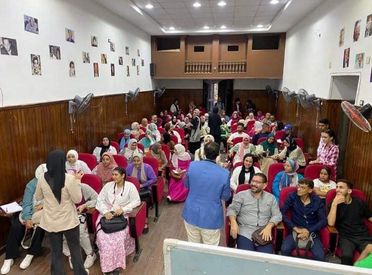
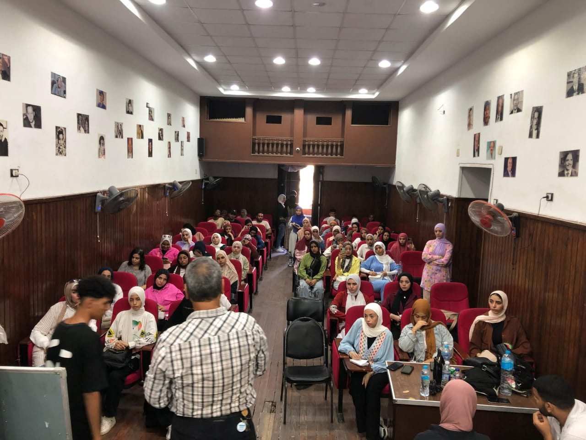
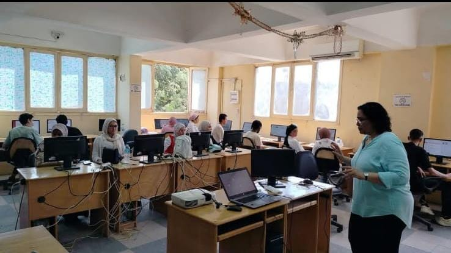
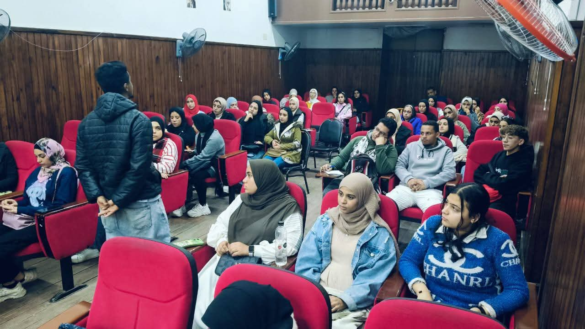
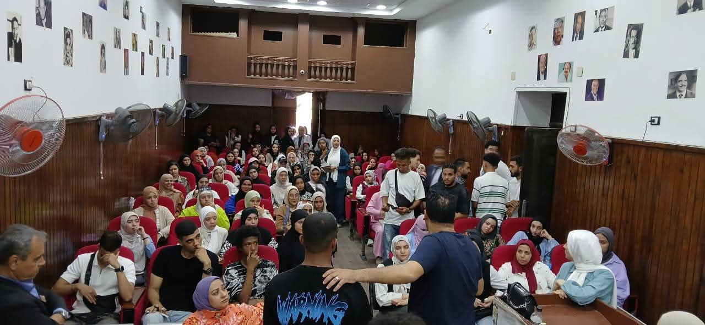
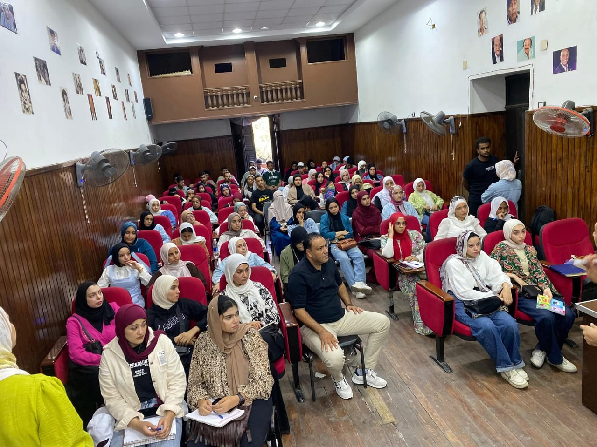

كورس TOT - لجنة التدريب والتثقيف المركزية

في إطار اهتمام لجنة التدريب والتثقيف المركزية بتأهيل
الكوادر الشابة
وتطوير مهاراتهم في مجال التدريب والتواصل الفعّال، تم تنظيم كورس
TOT (Training of Trainers)
الذي يهدف
إلى إعداد مدربين محترفين قادرين على تصميم وتنفيذ البرامج التدريبية بكفاءة عالية.
:تضمن الكورس مجموعة من المحاور المتميزة، منها
- .مهارات العرض والتقديم الفعّال
-
.اكيفية إعداد المحتوى التدريبي وتنظيم الجلسات
-
.طرق التعامل مع المتدربين وإدارة الوقت داخل القاعة
-
أساليب التقييم والتغذية الراجعة لتحسين الأداء
التدريبي.
وتميزت المحاضرات بطابع تفاعلي عملي، حيث كان المدرب يتعاون مع المشاركين ويشجعهم على التطبيق الفوري
لما يتعلمونه، من خلال أنشطة وتمارين تحاكي مواقف التدريب الواقعية.
وفي ختام الكورس، قام كل متدرب بتقديم عرض تدريبي قصير لتقييم مهاراته أمام زملائه، مما أتاح فرصة
للتطبيق العملي وتعزيز الثقة بالنفس. كما تم منح الشهادات بناءً على الأداء والمشاركة الفعّالة خلال
فترة التدريب.
بهذا الأسلوب، استطاع الكورس أن يحقق هدفه في تخريج جيل جديد من المدربين المؤهلين القادرين على نقل
المعرفة بطرق احترافية ومؤثرة.
كورس التجارة الخارجية – لجنة التدريب والتثقيف المركزية

في إطار سعي لجنة التدريب والتثقيف المركزية لتقديم برامج تدريبية متخصصة، تم تنظيم كورس التجارة
الخارجية الذي تناول مجموعة من المحاور الأساسية والهامة في مجال الاستيراد والتصدير وإدارة اللوجستيات.
خلال المحاضرات، حرص الدكتور المحاضر على تبسيط الشرح والتفاعل مع الطلاب، حيث كان يطرح أسئلة في نهاية
كل محاضرة ليقوم الطلاب بالبحث عن إجابتها وعرضها في المحاضرة التالية، وهو ما ساعد على ترسيخ المعلومة
وتنمية مهارات البحث والعرض لدى المشاركين.
كما تميز الكورس بتطبيق عملي مميز، حيث اشترطت إدارة البرنامج في نهايته أن يتم تقييم كل طالب من خلال
تقديم شرح أمام زملائه، ليتم منح الشهادة بناءً على الجهد والمستوى الفردي لكل مشارك.
بهذا الأسلوب، لم يكن الكورس مجرد محتوى نظري، بل كان تجربة تعليمية متكاملة جمعت بين المعرفة العملية
والتقييم التحفيزي، مما ساهم في رفع كفاءة الطلاب وتجهيزهم للتعامل مع متطلبات سوق العمل في مجال
التجارة الخارجية.
كورس التحول الرقمي – لجنة التدريب والتثقيف المركزية

في إطار سعي لجنة التدريب والتثقيف المركزية لمواكبة التطورات التكنولوجية وتعزيز ثقافة العصر الرقمي
بين الطلاب، تم تنظيم كورس التحول الرقمي الذي يهدف إلى تعريف المشاركين بأهمية التكنولوجيا الحديثة في
تطوير بيئة العمل وتحسين الأداء الإداري.
تناول الكورس مجموعة من الموضوعات المتنوعة، منها:
-
مفهوم التحول الرقمي وأهميته في المؤسسات.
-
استخدام الأدوات والتطبيقات الذكية في إدارة المهام.
-
الأمن السيبراني وحماية البيانات.
-
التحول إلى الأنظمة الإلكترونية في التعليم
والإدارة.
-
مهارات التعامل مع المنصات الرقمية المختلفة.
وتميز الكورس بأسلوب عملي وتطبيقي، حيث حرص الدكتور المحاضر على تدريب الطلاب على استخدام الأدوات
الرقمية بأنفسهم، مما ساعدهم على اكتساب مهارات جديدة يمكن تطبيقها في حياتهم الدراسية والعملية.
وفي نهاية البرنامج، تم تقييم المشاركين بناءً على مدى تفاعلهم واستيعابهم للمفاهيم الرقمية الحديثة،
كما تم منحهم شهادات معتمدة تقديرًا لجهودهم خلال فترة الكورس.
بهذا الشكل، ساهم الكورس في إعداد جيل واعٍ بالتكنولوجيا، قادر على مواكبة التحول الرقمي ومواجهة تحديات
المستقبل بثقة وكفاءة.
كورس الموارد البشرية (HR) – لجنة التدريب والتثقيف
المركزية

فنظمت لجنة التدريب والتثقيف المركزية كورس الموارد البشرية (Human Resources) ضمن سلسلة الدورات
الهادفة إلى تطوير مهارات الطلاب وتأهيلهم لسوق العمل في مجالات الإدارة والتنمية البشرية.
تناول الكورس مجموعة من المحاور المهمة، منها:
-
مفهوم الموارد البشرية ودورها في بيئة العمل.
-
مراحل التوظيف والاختيار والمقابلات الشخصية.
-
كيفية إعداد السيرة الذاتية باحترافية.
-
تقييم الأداء وتحفيز الموظفين.
-
التخطيط للتطوير المهني وإدارة فرق العمل.
اتسمت المحاضرات بروح التفاعل والمشاركة، حيث كان المدرب يشجع الطلاب على مناقشة الأفكار وتبادل الخبرات
من خلال تطبيقات عملية وتمارين واقعية تحاكي بيئة العمل.
وفي ختام الكورس، تم تقديم أنشطة تقييمية لتحديد مدى استفادة المشاركين، كما تم منح شهادات اجتياز
الدورة بناءً على المشاركة والالتزام والتفاعل خلال المحاضرات.
بهذا الشكل، ساهم الكورس في تأهيل الطلاب بالمهارات الأساسية في إدارة الموارد البشرية، وتعريفهم بكيفية
التعامل مع العنصر البشري داخل المؤسسات بشكل احترافي، مما جعل التجربة التعليمية ثرية
وملهمة لكل المشاركين.
كورس إدارة الأعمال – لجنة التدريب والتثقيف المركزية

نظمت لجنة التدريب والتثقيف المركزية كورس إدارة الأعمال الذي يهدف إلى تنمية مهارات الطلاب وصقل
خبراتهم في واحد من أهم المجالات العملية وأكثرها ارتباطًا بسوق العمل.
شمل الكورس التعرف على الأسس الحديثة في التخطيط، التنظيم، القيادة، واتخاذ القرارات، مع التركيز على
كيفية إدارة الموارد بكفاءة وتحقيق الأهداف الاستراتيجية.
تميزت المحاضرات بالتفاعل المستمر بين الدكتور والطلاب، حيث اعتمد أسلوب النقاش والعصف الذهني لتبادل
الأفكار، بجانب تقديم تدريبات عملية وأمثلة من الواقع العملي ساعدت المشاركين على ربط الجانب النظري
بالتطبيق الفعلي.
وفي نهاية الكورس، تم تحفيز الطلاب على عرض أفكار ومشروعات قصيرة كمحاكاة للواقع العملي، الأمر الذي
ساعدهم على تنمية مهارات العرض والإقناع بجانب تعزيز الثقة بالنفس والعمل الجماعي.
بهذا الشكل، نجح الكورس في أن يكون تجربة تعليمية متميزة، مزجت بين المعرفة الأكاديمية والخبرة العملية،
وأسهم في إعداد جيل أكثر وعيًا بمتطلبات سوق العمل في مجال إدارة الأعمال.
كورس التسويق - لجنة التدريب والتثقيف المركزية

في إطار حرص لجنة التدريب والتثقيف المركزية على تنمية مهارات الشباب وصقل قدراتهم العملية، تم تنظيم
كورس التسويق بحضور عدد كبير من المشاركين كما يظهر في الصور، حيث شهدت القاعة إقبالاً مميزًا من
الدارسين المهتمين بهذا المجال.
تميز الكورس بأجواء تفاعلية مليئة بالحماس، حيث حرص الدكتور المحاضر على تحفيز الحضور من خلال تقديم
هدايا رمزية للمشاركين الأكثر تفاعلًا، مما ساعد على خلق روح من المنافسة الإيجابية والتشجيع المستمر.
كما قام بتوزيع نسخ من كتابه الخاص على بعض المتفاعلين كنوع من التقدير والتشجيع.
الجميل في الكورس أن كل محاضرة كانت تحمل جديدًا من الأفكار والمحتوى، بالإضافة إلى أساليب مختلفة
ومحفزة عززت من التجربة التعليمية للمشاركين، وجعلت الحضور يتابعون بشغف واهتمام حتى نهاية البرنامج.
بهذا الشكل، استطاع الكورس أن يحقق هدفه في تعزيز المعرفة التسويقية ونشر الوعي العملي لدى المشاركين،
ليكون خطوة مهمة في طريق إعداد كوادر شبابية قادرة على المنافسة في سوق العمل.